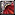
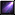
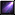

Talents
In-game code pentru completarea automata a talentelor:
/run t,p,a={3,13,23,32,52,72,83,91,102,112,131,143,151,162,172,181,191,1,33,2,23,32,52,}SetPreviewPrimaryTalentTree(t[1],GetActiveTalentGroup())for i=1,#t do a=t[i]if a<9 then p=a else AddPreviewTalentPoints(p,floor(a/10),a%10)end end
Stats
Haste-ul este un stat important deoarece din Cataclysm nu numai ca reduce global cooldown si casting time-ul la spells ca si pana acuma, dar inloc sa micsoreze timpu dintre tick-uri astfel micsorand durata dot-urilor adauga un extra tick la dot-uri la anumite procente cea ce inseamna un plus de damage in acelas numar de secunde.
1% Haste = 128.05701 Haste rating
 Immolate
Immolate
Corruption

 Shadowflame
Shadowflame

Aceste valori sunt atinse raid buffed( Dark Intent + Moonkin Aura/
Dark Intent + Moonkin Aura/ Mind Quickening/
Mind Quickening/ Elemental Oath/Wrath of Air Totem), iar unele din ele sunt chiar imposibil de atins.
Elemental Oath/Wrath of Air Totem), iar unele din ele sunt chiar imposibil de atins.
Intelect>HitCap(17%)>Haste>Crit>Mastery
Reforging
Reforging-ul este un nou sistem adaugat in expansionul Cataclysm. Acest sistem va permite sa transformati 40% din unul din stat-urile secundare (crit, mastery, hit, dodge, parry, expertise, haste, spirit) de pe un item intr-un altul care este mai benific clasei si specului dumneavoastra. Reforging-ul se poate face la Thaumaturge Zajir(Horde)/Thaumaturge Vashreen(Alliance). Atentie reforging nu se poate da intr-un stat care este deja pe item.
First of all trebuie sa aveti Hit cap(17%=1742 Hit Rating).
- Crit & Mastery = Mastery->Haste
- Crit & Hit = Crit->Haste
- Haste & Mastery = Mastery->Crit
- Mastery & Hit = Mastery->Haste
 Prime Glyphs:
Prime Glyphs:


 Meta:
Meta:  Red:
Red:  Yellow:
Yellow:  Blue:
Blue: